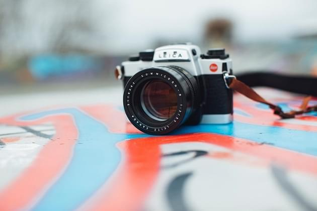
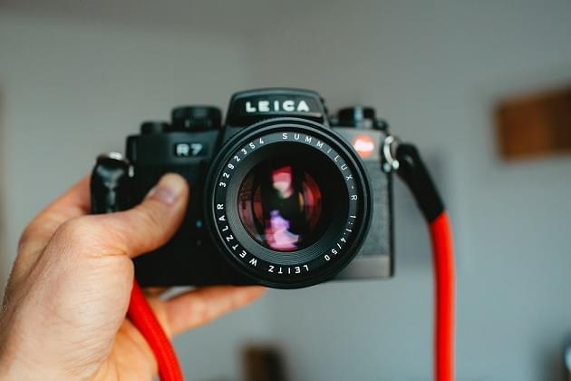

Back
Remember when I said the Leica Mini was my first taste of Leica? Well, I finally upgraded to the Leica R7. An opportunity arose that I got a chance to have a Leica R7 on loan for a while with an Elmarit-R 28mm f/2.8 lens. I have been daily shooting this set up for the last nine months and what I can say its been amazing. The months prior to that I was mainly shooting Point and Shoots like the Leica Mini and Contax TVS I. It was nice to get back to an SLR with all manual control and something a little more robust. I honestly don't think I have put this camera down since I've had it, and it has either been in my hand or bag every day.

The R system was Leicas way of getting in the SLR game when a lot of professionals where choosing SLRs over the Leica M series so why not just make your own SLR line, right? The Leica R7 is part of Leica's SLR line up and this is the seventh iteration that came out between 1992-1997 and was one of Leica's most advanced cameras ever. Now it wasn't the most advanced at the time considering it had no Autofocus, no auto-rewind or auto-advance, but that's the Leica way. The Leica R7 dose has some automated features with Aperture priority, Shutter priority, and Program mode. The maximum shutter speed of the Leica is 1/2000th of a second with a low shutter speed of 4seconds and bulb but the only downside is the low sync speed of 1/100th of a second. On the other side of the top plate, it has an exposure compensation dial built in with the ISO dial that goes from +3 to -3 and the ISO is is a scale of 200-12800. with those dials came some safety features of them locking inlace so they won't get bumped by accident and the shutter speed dial is a bit stiff but smooth. Now the Leica R7 has all the standard SLR features from the depth-of-field preview and self-timer and tripod mount on the baseplate. The light meter of the camera is quite good and informative with .05 increments to help get the precise exposure. Speaking of exposure the meter in manual mode is a spot meter and in A, T or P it has Full Field Integral mode that is the equivalent of Nikon's Matrix metering mode. The meter displays the mode you are shooting in the bottom left corner, to the right of that is the aperture then the shutter speed. On the left side of the camera new, the lens is a button/switch that is a light that lights up the aperture in low light to make it easier to read. The camera is covered in plastic, which doesn't really seem Leica like but under each plastic, bob is metal which makes it feel really solid and tank like.

The Handling
The Leica R7 feels quite amazing in the hands it's an extremely solid camera that has some heft to it that makes it feel like a serious camera. The grip of the R7 is quite good, on the back of the film back is a protruding thumb rest that seems like it helps with the grip of the camera. Then I also use the film advance lever has a thumb rest as well because the camera is a bit heavy and you need the extra rest for your thumb. The shutter speed dial sticks out enough that this perfect to use with one hand finger without moving the camera from your eye. The viewfinder is pretty bright but not overly bright and its accurate of course since its an SLR. Honestly, it really performs like any other SLR camera.
The Not So Good
Shooting a camera every day for a long period of time you really get to know the ins and outs of the camera and the minor annoyances that come with it. Now, none of these are deal breakers for me, but they are just really just fucking annoying but you get used to it. First of all this camera is fucking heavy, about 36.95oz with the 28mm on it compared to my F3 that is 33.40 with a 50mm series E lens mounted on it. Now, 3.55 doesn't sound like a lot but lugging this thing around for 6 hours really takes a toll on your wrist but its a nice workout! Second, the fact that this camera takes 4 LR44 batteries... It seems really excessive because most film SLRs take one or two tops but in the manual, it says it takes four batteries to prevent frequently changing batteries. With that being said the batteries lasted from November to just about a month ago when I was going out to shoot and the camera batteries died and rendered the camera's shutter to only operate on Bulb or 100. Lastly, the film advance lever is probably the least well- constructed part of the camera, it doesn't feel solid compared to the rest of the camera. I have only had the camera fail on me twice once was with the batteries dying and the other was when the advance leaver went limp when I was loading the film but I believe that was user error when I was loading the film in.
Images
All images were taken with the Leica R7 and the 28mm Elmarit lens on it. For right now I have only shot black and white with this camera and when I finish the Cine Still 800T I will add those images to this! Sidenote: all shot by zone focusing. These images are from a recent trip to Boston's Haymarket, which is a current series I am working on. Also my "through the blinds" series and "All'estremità Nord"